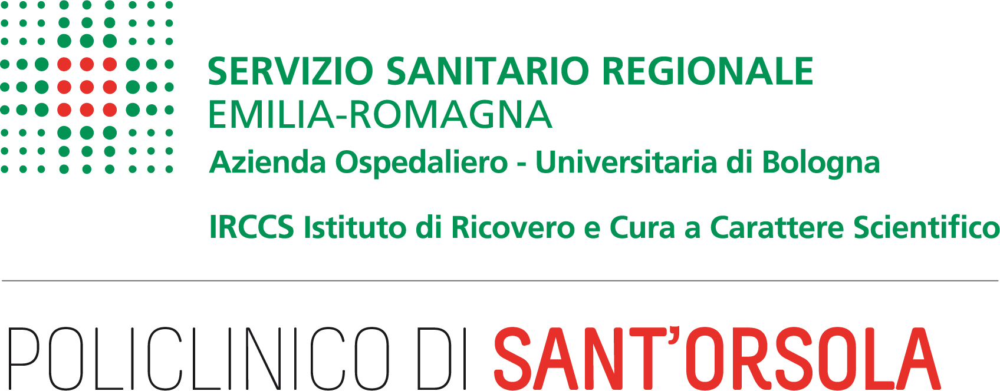
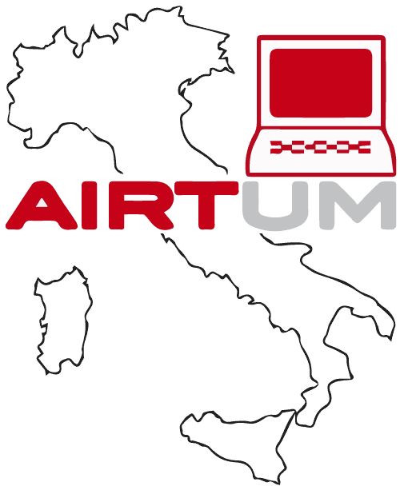
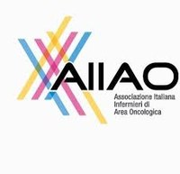
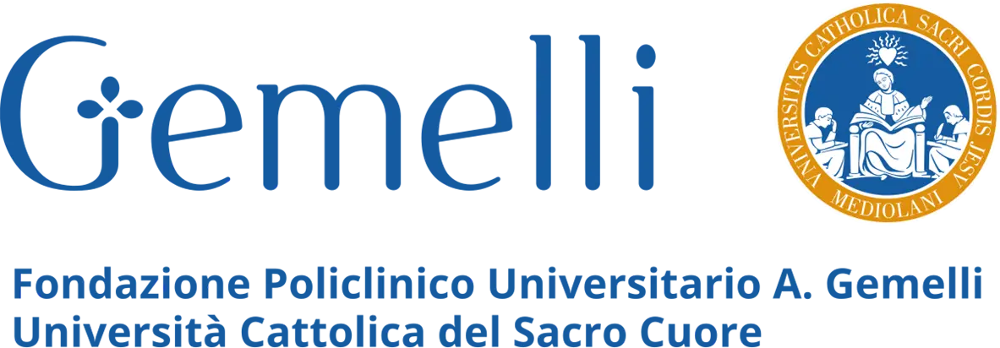

Partenerii noștri
Proiectul DCIMIT este posibil datorită colaborării cu instituții de sănătate, centre de cercetare și organizații oncologice de top din Italia
Finanțat de AIRC
Această cercetare a primit finanțare din partea Fundației Italiene pentru Cercetarea Cancerului (AIRC) în cadrul proiectului MFAG 2024 ID. 30481 – Investigator principal: Valentina Biagioli
UNIBO
Departamentul de Științe Medicale și Chirurgicale al Universității din Bologna, care coordonează proiectul de cercetare DCIMIT și toate activitățile studiilor.

IRCCS Policlinico Sant'Orsola
Important spital universitar din Bologna, care oferă expertiză clinică și recrutarea pacientelor pentru studiul cu metode mixte.

AIRTUM
Asociația Italiană a Registrelor de Cancer, care colaborează la studiul bazat pe registre pentru analiza datelor despre cancer la nivel populațional din întreaga Italie.
Sapienza Università di Roma
Departamentul de Sănătate Publică și Boli Infecțioase al Universității Sapienza, care aduce expertiză în sănătate publică și epidemiologie.

AIIAO
Asociația Italiană a Asistenților Medicali din Oncologie, care sprijină aspectele legate de îngrijirea pacientelor și implicarea comunității în studiul de intervenție.
AIOM
Asociația Italiană de Oncologie Medicală, care oferă expertiză și sprijină inițiativele de cercetare oncologică la nivel național.

Policlinico Gemelli
Spital de cercetare de top, specializat în sănătatea femeii și a copilului, care aduce expertiză clinică proiectului DCIMIT.
IRCCS CRO
IRCCS Centru de excelență în oncologie
IRCCS - Fondazione Pascale
Institutul Național pentru Cercetarea și Tratamentul Cancerului „Fundația Giovanni Pascale”.